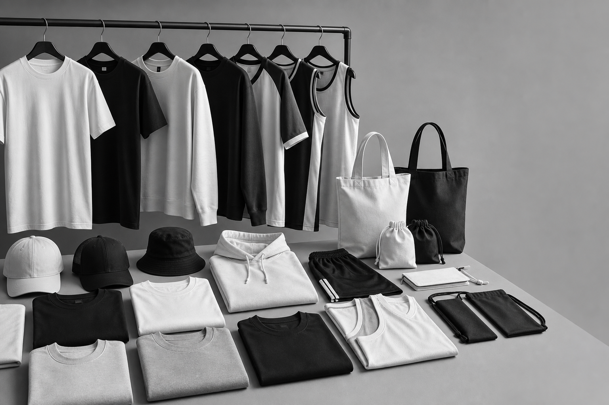

CASE 01 / BtoB
ウォッシャブルマスク
北海道コンサドーレ札幌×パートナー企業
スポンサードマッチでの露出拡大を目的に、企業のブランドカラーを活かしたオリジナルマスクを商品化。入場時の選手、チア、スタジアムスタッフまでの着用を設計し、会場全体で統一した印象を作りました。
- ITEM
- オリジナルマスク
- ROLE
- 企画・デザイン・商品化
- POINT
- 企業カラーと会場露出の連動
WORKS / CASE STUDY
アイテムを作るだけではなく、誰に・どこで・どう届けるかまで。スポンサー、チーム、サポーターの関係をグッズで繋いだ事例です。
CASE 01 / BtoB
北海道コンサドーレ札幌×パートナー企業
スポンサードマッチでの露出拡大を目的に、企業のブランドカラーを活かしたオリジナルマスクを商品化。入場時の選手、チア、スタジアムスタッフまでの着用を設計し、会場全体で統一した印象を作りました。

CASE 02 / BtoB + BtoC
チームパートナーと札幌のコーヒー店を繋ぐ物販企画
応援の合間にひと息つく「ハーフタイム」をコンセプトに、コーヒーとマグカップを商品化。パートナー企業、地域店舗、サポーターが一緒に参加できる売り場とストーリーを設計しました。

CASE 03 / SUPPORTER GOODS
普段使いの中に、さりげなくチーム愛を
買い物に使いやすい形と色を設計し、スタジアム以外でも手に取れるグッズへ。企業のブランドとチームへの愛着が共存する、日常性のあるアイテムを目指しました。